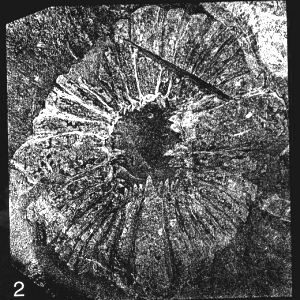
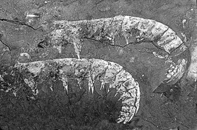
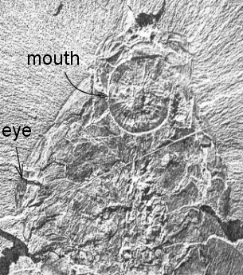
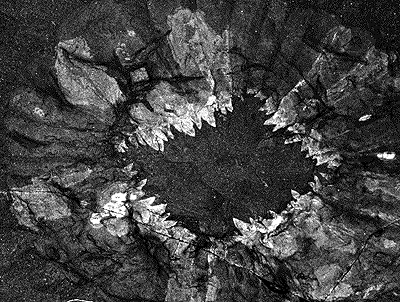
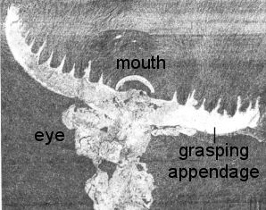
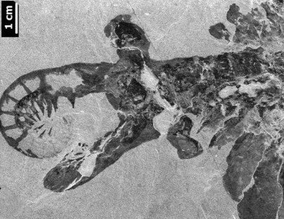
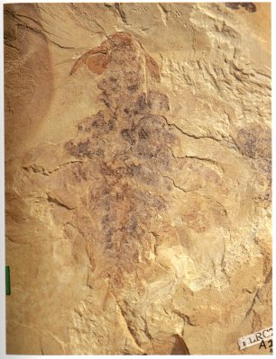
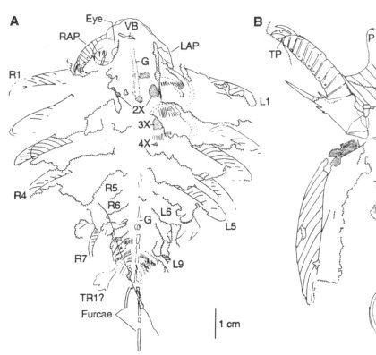

| 
This circular fossil from the Burgess Shale formation was described and named Peytoia, and was thought to be some sort of jellyfishbased on its strongly radial symmetry. |

Among the many strange arthropod fossils found in the Burgess Shale formation was a segmented form bearing spines, that was named Anomalocaris ("strange shrimp") by Walcott, who described it as the body of a primitive crustacean. |
| 
Years later, work by Whittington identified the round Peytoia fossil as the mouth of a large Cambrian animal. |

Reexamined, the details of Peytoia revealed a clearly predatory nature: numerous tooth-like spines on the ends of movable segments arranged around a gaping maw. It was a mouth configuration never before seen in such a large animal. |
| 
A specimen was found that showed that what Walcott thought was the body of a shrimp was one of a pair of spiny grasping arms at the front of the animal. Here they are shown fully extended to the sides. The rim of the mouth shows partially, as does one of the large eyes. |

Other specimens showed that the anterior appendages could curl, enfolding around prey, which was pinned by the arm spines. The captured prey was then placed into the mouth, which was under the head between the eyes. The eyes were at the ends of flexible stalks. |
| 
The Chengjiang anomalocarid Amplectobelua symbrachiata had large eyes, nine lateral swimming lobes, and a pair of long posterior furcae (antenna-like filaments) |

A camera lucida drawing of the specimen at left clarifies some of the features, including details on the anterior appendages (RAP and LAP). The detail of the appendage in B shows the formidable spine that arms the base of the appendage. |